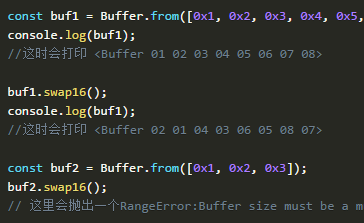

Nodejs中Buffer对象中buf.swap16，buf.swap32，buf.swap64的使用

发布于
swap的意思是交换，在Nodejs中Buffer对象的类成员函数swapXX实现的是Buffer值中的高低位交换。
这是在nodejs的V5.10.0版本之后新增的特性。
下面我来写个代码进行测试一下。
先看swap16
const buf1 = Buffer.from([0x1, 0x2, 0x3, 0x4, 0x5, 0x6, 0x7, 0x8]);
console.log(buf1);
//这时会打印 <Buffer 01 02 03 04 05 06 07 08>
buf1.swap16();
console.log(buf1);
//这时会打印 <Buffer 02 01 04 03 06 05 08 07>
const buf2 = Buffer.from([0x1, 0x2, 0x3]);
buf2.swap16();
// 这里会抛出一个RangeError:Buffer size must be a multiple of 16-bits
执行之后会看到buf的每两个字节都会进行一次高低位交换。
如果buf的长度不满足2的倍数就会抛出一个RangeError异常。
再来看swap32
const buf1 = Buffer.from([0x1, 0x2, 0x3, 0x4, 0x5, 0x6, 0x7, 0x8]);
console.log(buf1);
//这时会打印 <Buffer 01 02 03 04 05 06 07 08>
buf1.swap32();
console.log(buf1);
//这时会打印 <Buffer 04 03 02 01 08 07 06 05>
const buf2 = Buffer.from([0x1, 0x2, 0x3]);
buf2.swap32();
// 这里会抛出一个RangeError:Buffer size must be a multiple of 32-bits
可以看到的是，作用和swap16类似，只不过这是每4个字节就会进行一次高低位交换。
如果buf的长度不满足4的倍数就会抛出一个RangeError异常。
再来看swap64
const buf1 = Buffer.from([0x1, 0x2, 0x3, 0x4, 0x5, 0x6, 0x7, 0x8]);
console.log(buf1);
//这时会打印 <Buffer 01 02 03 04 05 06 07 08>
buf1.swap64();
console.log(buf1);
//这时会打印 <Buffer 08 07 06 05 04 03 02 01>
const buf2 = Buffer.from([0x1, 0x2, 0x3]);
buf2.swap32();
// 这里会抛出一个RangeError:Buffer size must be a multiple of 64-bits
可以看到的是，作用和swap16类似，只不过这是每8个字节就会进行一次高低位交换。
如果buf的长度不满足8的倍数就会抛出一个RangeError异常。
评论
或 匿名发表评论